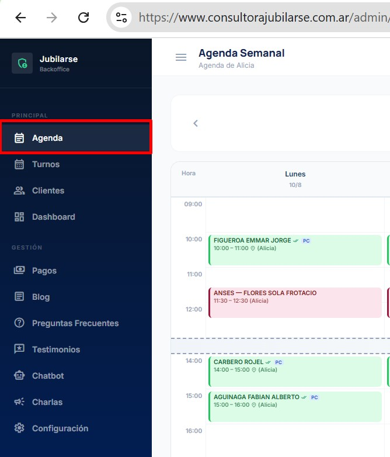

DESARROLLO DE APLICACIONES · IA Y AUTOMATIZACIÓN
Lo que ve tu cliente.
Lo que gestiona tu equipo.
En un mismo sistema.
Diseño aplicaciones que conectan la experiencia pública con la operación interna: sitios, portales, formularios, paneles de gestión y automatizaciones adaptados a cada organización.
UN MISMO
SISTEMA
SISTEMA
AUTOMATIZACIONESINTELIGENCIA ARTIFICIAL
UNA SOLUCIÓN, DOS LADOS
La aplicación acompaña
el proceso completo.
No se trata sólo de una página visible ni de un panel administrativo. El valor aparece cuando ambos lados comparten la misma información y reducen tareas repetidas.
Una experiencia clara
Encontrar información, solicitar un turno, inscribirse, consultar el estado o acceder a un portal.
Una gestión ordenada
Administrar datos, contenidos, pagos, agenda, comunicaciones y seguimiento desde un solo lugar.
Información conectada
Cada cambio realizado en la gestión puede reflejarse en la experiencia pública sin duplicar trabajo.
CASOS REALES
Aplicaciones construidas
sobre necesidades concretas.
La estructura queda preparada para incorporar nuevos proyectos a medida que se desarrollen y puedan comunicarse.
CONSULTORA PREVISIONAL
Consultora Jubilarse
Un sistema para conectar la atención pública con la agenda y la gestión cotidiana de la consultora.
consultorajubilarse.com.ar

Panel de gestión

ASOCIACIÓN CIVIL Y CULTURAL
Centro Amigos del Tango
Una plataforma para sostener la relación con socios y organizar la administración de la institución.
Portal de socios

Panel administrativo
BACK OFFICEAdministración integradaSocios, cuotas, eventos y comunicaciones.
PROCESO DE TRABAJO
Primero el proceso.
Después la tecnología.
Cada desarrollo parte de la forma real de trabajar de la organización y avanza por etapas verificables.
- 01
Relevar
Entender personas, tareas, datos, canales y puntos de fricción.
- 02
Diseñar
Definir recorridos, permisos, pantallas y prioridades.
- 03
Construir
Desarrollar e integrar la aplicación por etapas.
- 04
Acompañar
Probar, ajustar y facilitar su adopción en el trabajo cotidiano.
¿TENÉS UN PROCESO PARA ORDENAR?
Podemos convertirlo
en una herramienta.
Revisamos la necesidad, el recorrido de las personas y la operación interna antes de definir qué conviene desarrollar o automatizar.
Conversemos sobre tu proyecto